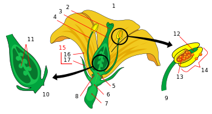

Despre flori
Floarea reprezintă organul de înmulțire al gimnospermelor și angiospermelor. Florile au fost mult timp admirate și folosite de oameni pentru a înfrumuseța mediul lor, dar, de asemenea, ca obiecte de romantism, ritual, religie, medicină și ca o sursă de hrană.
Structura florii
Elementele florale sunt formate din: sepale (primele care apar la marginea receptaculului) și petale (mai spre interior); totalitatea acestor elemente constituie învelișurile florale, după care urmează dispuse pe 1 sau 2 cicluri, și carpelele, formând ultimul verticil din centrul receptaculului.

Floarea
Ea ia naștere fie din mugurii florali, fie din mugurii micști ce se găsesc pe ramurile scurte ale tulpinii, în majoritatea cazurilor la subsoara frunzelor. Ea este formată dintr-un lăstar scurt, cu frunzele mai mult sau mai puțin metamorfozate, în funcție de rolul care îl au de îndeplinit. Partea tulpinală constituie axul florii, de obicei scurt și lățit la vârf, formând receptaculul floral. Acesta are forme diferite, bombat ca un disc, scobit ca o cupă, cilindric sau conic. Receptaculul reprezintă deci partea mai dezvoltată a codiței florii, care se numește și peduncul floral.Cautare: